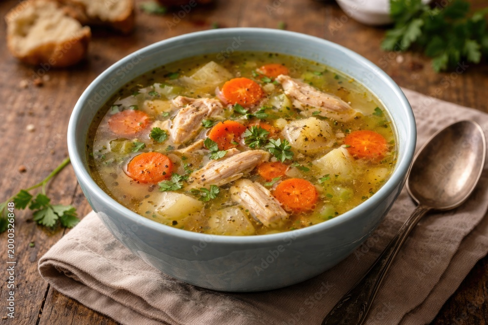

Just in case you've had one too many yesterday, worry not! Below you will find the perfect pick me up!
Or maybe your life isn't a complete mess and you just want to cozy up under a blanket with a nice bowl of hot soup.
Either way, the following recipe should satisfy your needs.